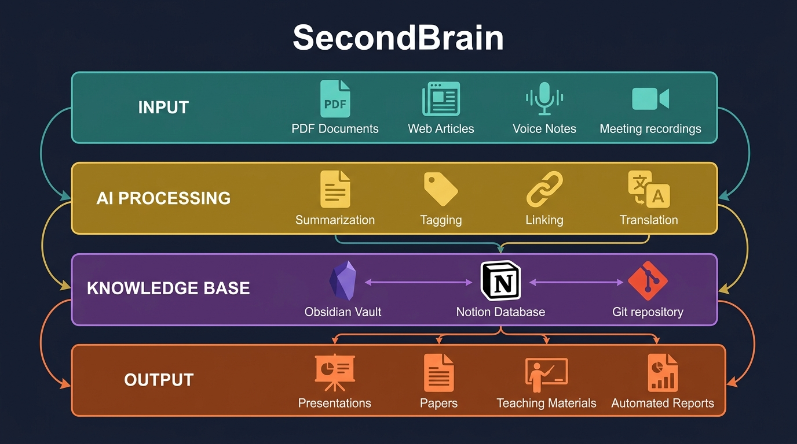
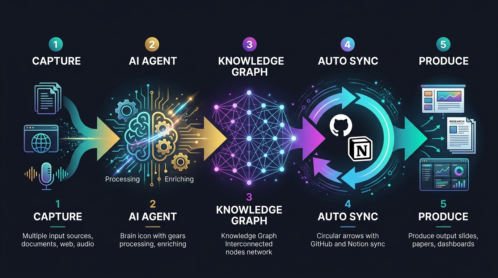

UNIVERSITY TALK 2026
人駕馭 AI Token
產生無限可能
從火的馴化到 AI 的駕馭 — 一場關於人類潛能的分享
今天的旅程
01 代價與駕馭力演進
三次技術革命的社會抗爭
三巨頭競速
02 你在哪裡？
81億人口中的 AI 使用分布與 Token 經濟
03 三個核心能力
用工具 → 選工具 → 造工具
04 AI 成熟度五層
從使用工具到方法創新（L1→L5）
05 實戰行動
GitHub 學生方案、AI 工具、第一步
06 未來展望
OpenAI 社會契約、Token 預算、學習路徑
到扔汽油彈
三個時代，三個故事，一個相同的模式。
一台剪切機取代五名熟練工人。省下的錢，沒有一分流向被取代者。
剪刀差：剪切機數月擴散，工人保護法等了 21 年
然後決定把它藏起來。
2012 年柯達破產。
同年 Instagram（13 名員工）以 10 億美元被收購。
剪刀差：數位相機從發明到全面普及花了 25 年，但柯達所在城市的就業至今未恢復
Z 世代對 AI 的憤怒從 22% 攀升到 31%，希望從 27% 降到 18%。
剪刀差：AI 數月改變就業市場，制度回應 3+ 年仍無實質進展
制度追不上技術的速度 — 而且越來越快
工會合法化等了 59 年
柯達城至今未復原
UBI、AI 稅仍在「討論」
這不是一波一波的 — 是三波同時灌進來。
三種護城河 — 三種追不上的方式
Anthropic
想法→上線→Dogfooding→再發布
平均每天都在改變使用者工作流
護城河：執行力
OpenAI
每次發布都是市場級震動
改變整個產業的使用習慣
護城河：品牌心智
10 億用戶 × 多入口
Workspace、Android、Cloud 全滲透
護城河：生態分發
三組數據，同一個結論
速度，是這次革命的本質差異
所以真正的問題是：人類怎麼辦？
Part 1
人類駕馭力的演進
從火到 AI — 人類駕馭力的演進
火
駕馭火 = 出現文明
烹飪、取暖
夜間活動
人類脫離動物界
獸力·機械
駕馭獸力 = 效率
農耕、運輸
工業革命
一人抵百人
科技
駕馭科技 = 創新
網路、軟體
平台經濟
改變商業模式
AI Token
駕馭 AI = 無限可能
生成式 AI、Agent
超級個體
一人 = 一間公司
駕馭火 — 文明的起點
40 萬年前，人類學會控制火
• 烹飪 → 大腦發展
• 夜間活動 → 社交文化
• 冶煉金屬 → 工具進化
核心邏輯
火不是人類發明的，
但人類學會「駕馭」
驅動力是人對工具的掌控能力
駕馭獸力與機械 — 效率的爆發
農業時代
~10000 BC
牛耕田、馬運輸
一頭牛 = 5個人力
工業革命
1760s
蒸汽機、紡織機
一台 = 100個工人
電力時代
1880s
電動機、生產線
汽車的流水線
自動化
1970s
CNC、機器人
精準度超越人手
駕馭科技 — 數位創新
1990s 網路
撥接到寬頻
資訊傳播
從天變秒
電子商務誕生
2000s 軟體
SaaS 雲端服務
Google, Facebook
軟體服務世界
2010s 平台
Uber, Airbnb
App Store
共享經濟
人人都是創業家
2020s AI
ChatGPT, Claude
生成式 AI 革命
人人都是開發者
— 鄭伊健《烈火戰車2：極速傳說》1999
不是 AI 有多強，是你用 AI 有多狠
車子再好，不會開也沒用。AI 再強，不會用也是零。
決定勝負的永遠是駕馭者。
工業革命的演進 — 從 1.0 到 5.0
動力與機械化
1784
蒸汽機
操作導向
電力與規模化
1870
電力驅動
流程導向
資訊與自動化
1969
PLC/IT
IT 導向
數據與智慧化
2011
IoT/AI
數據導向
人機與永續化
NOW
人本/ESG
價值導向
工業 5.0 帶出現代人的三個能力
數位力
理解工具、運用科技
提升決策與效率
AI 工具應用與數據處理能力
已列入企業職能地圖
系統力
看見因果、跨域影響
理解整體架構與連動關係
ESG 跨部門影響分析
供應鏈風險管理核心能力
永續力
掌握風險、經營未來
長期價值與利害關係人
從合規揭露到戰略 ESG
永續 = 競爭力
迭代週期 — 加速度在哪裡？
蒸汽機、電力、工業革命
網路、SaaS、平台經濟
生成式 AI 重塑工作流程
OpenAI · Anthropic · Google
Part 2
你在哪裡？
AI 使用現狀與 Token 經濟
世界總人口 81 億 — 你在哪個方塊？

Source: r/vibecoding (Reddit, Feb 2026)
84% 的人 — 從來沒用過 AI
為什麼這麼多人沒用過？
• 基礎設施不足（網路、設備）
• 語言障礙（英語為主）
• 年齡與數位落差
• 不知道 AI 能做什麼
• 沒有動機
這代表什麼機會？
你是大學生，你有：
• 網路 ✓ • 設備 ✓
• 英文能力 ✓ • 學習動機 ✓
你已經比 84% 的人更有條件。
問題只剩：你願不願意開始？
16% 的人 — 跟 AI 對話過
這群人怎麼用 AI？
• 問問題、查資料（取代 Google）
• 翻譯、摘要、改文法
• 聊天、好奇試玩
• 偶爾寫寫文案
停留在這層的問題
• 不會 Prompt Engineering
• 沒有系統性的使用場景
• 不知道 AI 的極限在哪
• 「AI 好像也沒那麼厲害」
頂端的 0.3% 和 0.04%
付費訂閱 AI 服務
• ChatGPT Plus ($20/月)
• Claude Pro ($20/月)
• Gemini Advanced ($20/月)
• Copilot Pro ($10/月)
• Cursor Pro ($20/月)
用 AI 產出程式專案
• Vibe Coding（氛圍編程）
• AI 輔助全棧開發
• 自動化腳本與工具
• AI Agent 應用
• 開源專案貢獻
你現在在哪個方塊？
Token 消費金字塔 — 你在哪一層？
一個人的價值
薪資 = 2× · Token 預算 = 10 人的產出
一個年薪百萬的工程師，加上一筆 Token 預算，
可以產出過去需要 10 個人才能完成的工作量。
這不是未來 — 這是矽谷現在正在發生的事。
我們公司每一位工程師
都將有一筆年度 Token 預算。」
「工程師的年薪可能是幾十萬，我可能會在薪水之上再給他們一半的金額作為 Token，讓他們的生產力放大十倍。」
矽谷最新招募籌碼：你的 Offer 包含多少 Token？
衡量能力的辦法 — 指標多元化
• GPA / 成績排名
• 學歷（哪個學校畢業）
• 證照數量
• 工作年資
• 職位頭銜
單一維度、線性累積
• GitHub Stars / 專案數量
• 追蹤人數 / 影響力
• AI 工具的使用深度
• 能解決問題的複雜度
• 作品集（Portfolio）
多元維度、指數成長
Part 3
三個核心能力
用工具 → 選工具 → 造工具
學習的三個階段
🎓 大學生
教你知識跟工具
去解決問題
給你問題 ✓
給你工具 ✓
給你方法 ✓
🔬 碩士
給你問題
自己找工具跟解決方法
給你問題 ✓
找工具 ⬆
找方法 ⬆
🏆 博士
自己找問題
自己解決
找問題 ⬆⬆
找工具 ⬆
找方法 ⬆
三個階段的學習路徑
學會用工具
Tool User
• 會用 ChatGPT/Claude
• 會寫基本 Prompt
• 能完成作業報告
• 理解 AI 能力邊界
學會選工具
Tool Selector
• 知道不同 AI 的強項
• 能為特定任務選工具
• 會評估 AI 輸出品質
• 建立自己的 AI 工作流
學會創建工具
Tool Creator
• 用 AI 寫程式、建系統
• 設計 AI Agent 流程
• 整合 API 與自動化
• 從消費者變成創造者
企業要的是什麼？
• 會用 ChatGPT 聊天的人
• 把 AI 當搜尋引擎用的人
• 只會 copy-paste 的人
• 「我會 Prompt Engineering」
（但只會基本對話）
• 能用 AI 改造工作流程的人
• 能識別哪些流程可 AI 化的人
• 能評估 AI 方案 ROI 的人
• 能設計 AI + 人的協作模式的人
你的競爭力，不是你用過多少 AI 工具，而是你能用 AI 解決多複雜的問題。
企業 AI 服務診斷流程
識別痛點
哪些流程耗時？
重複性高？
容易出錯？
評估可行性
這個流程適合 AI 處理嗎？
資料是否足夠？
選擇工具
ChatGPT API？
自建模型？
現成 SaaS？
設計流程
AI + 人怎麼協作？誰做最後決策？
驗證優化
實際效果如何？
成本合理？
持續迭代
想看的是終點，卻忽略了過程
• 別人的完成品、成功案例
• AI 工具的酷炫 Demo
• 一夜之間成功的故事
• 「AI 好厲害」的新聞標題
• 無數次失敗的 Prompt 嘗試
• 學習工具的時間投入
• 建立工作流的反覆迭代
• 從 0 到 1 的痛苦過程
AI 時代 — 學習方法的新定義
🎓 大學 + AI
AI 就是你的超級工具箱
每個科目都能用 AI 加速學習
💡 每堂課試著用 AI 協作完成
🔬 碩士 + AI
AI 幫你搜文獻、做實驗
你負責問對問題和驗證結果
💡 用 AI 做文獻回顧，自己判斷 research gap
🏆 博士 + AI
AI 幫你探索未知領域
你定義什麼問題值得解決
💡 用 AI 做創新性分析，原創洞察來自你
從消費者到創造者 — 身分轉換
• 用別人做好的 AI 產品
• 在現成介面裡打字
• AI 給什麼就接受什麼
• 被動等待新功能
• 「AI 好厲害但跟我無關」
你是 AI 的使用者，但不是駕馭者
• 用 AI 建造自己的工具
• 設計自己的 AI 工作流
• 能判斷 AI 的輸出品質
• 主動探索 AI 的邊界
• 「我能用 AI 做什麼？」
你是 AI 的駕馭者，而且比 AI 凶 🔥
WEF 2025 關鍵技能 × 三力模型
系統力
01 批判性思維
02 韌性與彈性
永續力
03 領導力與社會影響力
05 自我激勵與自我覺察
數位力
04 創意思維
06 科技素養
07 好奇心與終身學習
Stanford AI Index Report 2025 — 關鍵數據
年增 31%
生成式 AI 爆發
各行業搶人
中美領先
Part 4 — 進階
AI 應用成熟度五層
從使用工具到方法創新
五層 AI 成熟度模型
→ 單次結果
→ 標準流程
→ 重複資產
→ 系統效率
→ 新範式
L1 使用特定工具 — 單點加速
論文寫作
用 ChatGPT 改寫 abstract
用 Claude 摘要文獻
用 AI Studio 潤英文
做簡報
用 ChatGPT 生大綱
用 Canva AI 生版型
知識管理
用 NBLM 問 PDF
用 Obsidian AI tag
問卷設計
AI 幫寫題目
L2 不同工具組合 — Workflow
📝 論文寫作
PDF → NotebookLM → ChatGPT → R code → Word
成果：從片段生成進入「可完成一輪初稿」
📊 做簡報
會議錄音 → AI 摘要 → 自動投影片 → 圖像生成 → 講稿
成果：可上台簡報版本 + speaker note
🧠 知識管理
Google Drive → Obsidian → Notion Dashboard → 每日摘要
成果：專案知識地圖、文件對應關係
📋 問卷設計
研究目的 → 題項生成 → 專家效度 → GAS
成果：可發放問卷 + 題項維度 mapping
L3 創建工具 — Builder
📝 論文自動化工具
• 文獻矩陣生成器
• 統計表自動產生器
• Reference formatter
一鍵生成 appendix、一鍵產出 regression table
📊 簡報模板產生器
• 課程簡報模板產生器
• 自動案例填充系統
同主題快速客製不同客戶版
🧠 知識庫引擎
• CLI 自動分類器
• Google Sheet RAG 索引器
可搜尋知識庫
📋 題庫系統
• 題庫生成器
• 反向題自動化
快速生成多版本問卷
L4 改造流程 — Process Re-engineering
傳統論文流程
RQ → 文獻 → 理論 → 方法 → 寫作
L4 論文流程
RQ → Agent 文獻地圖 → 自動假說候選 → 模型實驗 → Reviewer Critic → 成稿
傳統簡報流程
自己做 → 改版 → 排版
L4 簡報流程
知識庫 → Audience Persona → 自動故事線 → 版型 → 練講稿
L5 — 最高層
而是因為 AI 的存在，
工作方法本身被重新定義
論文
Multi-Agent Scientific Research
簡報
AI-driven Persuasion Methodology
知識管理
Knowledge-to-Insight Engine
問卷
AI-native Psychometric Method
L5 方法創新 — 四場景深入
論文：AI 成為研究方法
建立 Multi-Agent Scientific Research Framework：Literature Agent + Theory Agent + Experiment Agent + Reviewer Agent
研究貢獻不只是結果，而是如何用 Agent 改造 scientific discovery
簡報：從投影片變決策系統
AI 根據受眾自動生成不同說服路徑：對 CFO 講 ROI、對工務講節能、對董事會講風險
AI-driven persuasion methodology
知識：從儲存變知識生產
論文→教案、案例→模板、問卷結果→新假說。AI 主動產生下一個研究問題
Knowledge-to-Insight Engine — 新知識生產方法
問卷：AI-native 研究設計
RQ→抽 construct→自動對應理論→生成題項→預測 loading→根據 pilot data 重寫
AI-native psychometric methodology — 非常有發表潛力
你在哪一層？— 一句話判斷
實戰案例 — SecondBrain 第二大腦：架構層

實戰案例 — SecondBrain 第二大腦：資訊流

Part 5
實戰行動
你的第一步
GitHub 學生開發者方案 — 免費領超過 $2,000
🤖 GitHub Copilot
$100/年 · AI 程式碼助手
📦 GitHub Pro
$84/年 · 無限私有倉庫
☁️ Azure Credits
$100 · 雲端運算額度
🛠 JetBrains IDEs
$649/年 · 專業開發工具
🌐 Namecheap
$100+ · 免費域名+SSL
🎁 更多工具
$500+ · 數十種開發者工具
AI 工具全景 — 免費就能開始
💬 ChatGPT
聊天 / 寫作
免費：GPT-4o mini 無限
Pro：$20/月
🔬 Claude
分析 / 程式
免費：Sonnet 有限
Pro：$20/月
🔍 Gemini
搜尋 / 整合
免費：2.0 Flash 無限
Pro：$20/月
⌨️ Copilot
程式碼
免費：學生免費!
Pro：$10/月
🔎 Perplexity
研究 / 搜尋
免費：基本搜尋
Pro：$20/月
📓 NotebookLM
文件分析
50 個筆記，完全免費!
Prompt Engineering — 跟 AI 說話的藝術
「幫我寫一篇報告」
「翻譯這段文字」
「寫一個程式」
「你是行銷策略專家。請為手搖飲品牌撰寫 ESG 行銷方案，目標客群 18-25 歲，包含社群媒體策略，預算 50 萬，請用表格呈現 3 個方案比較。」
角色
Role
背景
Context
任務
Task
格式
Format
AI 輔助學習的正確心態
• 直接複製 AI 答案交作業
• 完全不看就提交
• 用 AI 替代思考過程
• 「AI 會了所以我不用學」
• 不驗證 AI 的回答正確性
• 交出自己都看不懂的內容
• AI 是研究助手，不是代筆
• 先自己思考，再用 AI 驗證
• 理解 AI 回答，再融入觀點
• 用 AI 學更快，但學更深
• 質疑 AI — 它也會犯錯
• 交出自己完全理解的成果
AI + 你的專業 = 無限可能
📈 商管 + AI
AI 市場分析、自動化報告、客戶洞察
= 數據驅動的策略顧問
🎨 設計 + AI
AI 生圖、UI 原型、風格轉換
= 產能 10 倍的設計師
⚖️ 法律 + AI
AI 合約審查、判例搜尋、法規比對
= 效率型法律工作者
🏥 醫護 + AI
AI 文獻回顧、病歷分析、用藥建議
= 研究型臨床專家
📚 教育 + AI
AI 個人化教材、自動出題、學習分析
= 精準教育設計師
🔧 工程 + AI
AI 程式碼生成、模擬分析、CAD 自動化
= 10x 工程師
Vibe Coding — 三家代表 × 三級用法
🟣 Claude
寫程式 + 渲染
Artifacts 即時預覽網頁
Claude Code AI 工程師
理解整個專案結構
🟢 ChatGPT Codex
寫代碼
GPT-4o 程式碼生成
Codex Agent 自主修 bug
GitHub 整合、PR 自動產出
🟠 Antigravity IDE
全端開發
AI 原生 IDE 環境
描述需求即生成應用
從想法到部署一站完成
🎯 動手練習 — 5 分鐘做出你的第一個網頁
👤 個人介紹頁
名字、學校科系
興趣專長、自介
作品集或社群連結
🏫 社團招募頁
社團名稱
活動亮點
加入理由
社員心得
報名方式與
QR Code
🎓 專題展示頁
研究主題
問題與方法
關鍵成果
團隊成員
技術架構說明
🚀 創業 Landing
產品名稱
痛點
目標客群
產品特色
CTA 按鈕與定價
Part 6
未來已來
你準備好了嗎？
BBC NEWS · 2025.11.18
假如
AI 泡沫來臨
"No company is going to be immune, including us."
「沒有任何公司能夠免疫，包括我們。」
— Google CEO Sundar Pichai
連 Google 的 CEO 都這麼說了。
你覺得你的產業、你的職位，能免疫嗎？
Jensen Huang 語錄
的社會契約
這次的差別是 — 連 AI 公司自己都在催促制度跟上。
薪資結構的未來 — Token 成為生產力貨幣
底薪 + 獎金 + 股票
能力 = 個人產出
升遷 = 管更多人
年資 = 更高薪水
天花板：你的時間有限
底薪 + Token 預算 + 股票
能力 = 個人 × AI 槓桿
升遷 = 駕馭更多 Token
效率 = 10x 生產力
天花板：你的想像力
你的 AI 學習路徑 — 從今天開始
今天 — 30 分鐘
註冊 AI 工具帳號、練習寫 Prompt
本週 — 每天 15 分鐘
申請 GitHub 學生方案、每天用 AI 完成一件事
本月 — 每週 2 小時
建立 AI 工作流、用 AI 做一份完整作業
本學期 — 持續累積
完成一個 AI 輔助專案、建立 GitHub Portfolio
畢業前 — 融入日常
成為 AI 駕馭者 — 能用 AI 解決複雜問題
Take Away — 今天的關鍵收穫
🔥 駕馭力
文明躍遷，都是人類學會
「駕馭」新工具
🎯 Token 價值
一個人的價值 = 你能駕馭多少 Token
🛠 三階段
用工具 → 選工具 → 造工具
🧬 五層成熟度
L1 做事 → L2 串工具 → L3 做工具 → L4 改 SOP → L5 創新方法
📊 稀缺性
全球 0.04% 的人在用 AI 創造專案
— 你現在就可以加入
🚀 行動
從今天開始：註冊、練習、建立你的 GitHub Portfolio
這是一個最好的時代
也是一個最糟的年代
最好的時代
• NotebookLM 讓任何人都能用 AI
深度學習一個領域
• 上傳論文 → AI 生成 Podcast →
聽懂一個領域只要一天
• AI 輔助讓門檻大幅降低
最糟的年代
• 博士論文造假 — AI「完美」
生成的論文「DOI 造假」
• 學術誠信的底線正在被挑戰
• 當 AI 能產出「看起來像論文」
真正的研究貢獻反而稀缺
時代 vs 年代
學習與成長的方式
知識生產會加速
跨領域會成為常態
跟方法可以遵守
期刊還在摸索
每個人各憑本事
「過渡期 — 有方法的人會走得快，沒方法的人會走得險。」
Q & A
我們來聊聊你心中的困惑
當 AI 變得人人可用，能力的差距將不只在智慧
你只管勇往直前
與 AI 協作的架構 我們來建
cooperation.tw